Gauntlet progress
Platform core, judged piece by piece against the owner's bar and Odoo Community. Rebuilt from gauntlet/verdicts/ by gauntlet/tools/record.mjs. Full evidence in ledger.md; owner items in needs-human.md.
Foundation and hard gates
Wave 0 · 11 rounds judgedEvery gate held and every test passed. What holds p00 back is that its own one command now fails the owner's processor maximum on a busy machine. Run 1 on the clean clone passed all 1,746 tests and was still FAILED by the ratchet: 10,726 processor seconds against the 10,500 s maximum. Run 2, on a slightly quieter machine, passed with 10,433 s, a 0.6% margin. Round 11 used 10,250 s; this branch's own integration runs used 10,338 to 10,701 s. Each round adds tests: dotnet 647 to 696 and e2e 106 to 111 since round 11. The cost by stage: dotnet 7,987-8,136 s (77%), web 1,954-2,068 s, e2e 443-472 s (nearly double r11's 253 s). So within a round or two the clean-clone gate will fail by default, and every later piece (accounting, inventory, VAT, payroll) will start out BLOCKED on a gate it cannot affect. For a UAE trading or manufacturing company this is the gate that lets new modules be built and checked at all. Fix it inside p00's surface without lowering the bar: profile where the dotnet stage spends its processor time (the G1 HTTP isolation, non-interference and per-plant self-test fixtures each start whole hosts and databases). Share fixtures and test databases across the gate collections, and run each planted self-test only against the endpoints its plant can reach. Then report the stage numbers in the decision record, so needs-human #22 gets the evidence it needs.
- G2 permissions: the gate catches unchecked actions planted in p00's kernel PASS — Five plants, all in plants/plants.diff and each proved live by plants/CriticR12Proof.cs (the control run with no plant passes 4/4, plant-PROOFNONE2.log). P6 is round 11's miss, planted again unchanged: any route id or userId equal to the caller's own user id passes. G2 now catches it with 5 failures, for example 'GET /api/identity/roles/{id:guid} naming the caller's user id answered 404 (expected 403)' (plant-G2P6.log), so r11's gap is fixed. P7, 'whoever may change a resource may read it': caught by Granting_exactly_one (plant-G2P7.log). P8, 'people may manage what they created': a user who may only create roles renamed their role (PUT 200) and deleted it (DELETE 204). Caught by A_user_who_lost_every_role_is_denied_everything_on_the_records_they_made and by Granting_exactly_one naming audit.entries.record_id (plant-G2P8.log). P9, a kernel endpoint GET /api/shell/badges that needs only a sign-in: the host refuses to start ('Endpoint authorisation is incomplete ... declares no permission') (plant-G2P9.log). P10, a session's permissions kept for 5 minutes in a process-wide dictionary, so a removed permission keeps working: caught live by G2CompanyRoleTests and G2ReportDataTests, and from the code by G1ProcessStateTests (plant-G2P10.log, plant-G1P10.log).
- G1 tenant isolation: the gate catches leaks planted in p00's kernel PASS — Plant L8 changes the kernel TenantSql.ProtectTenantTable policy to 'tenant_id = erp.current_tenant_id() OR erp.current_tenant_id() IS NULL'. G1DatabaseIsolationTests caught it 3 ways: the standard-policy check, 'app role sees only its own tenant' and 'connection-level tenant ignored' (plant-G1L8DB.log). Plant L9 keeps list totals in temporary files for 120 s, keyed by list, search and filter but not tenant. The state lives outside process memory, so no static-field scan can see it. It was caught by the live checks (plant-G1L9.log, 30 min). G1HttpIsolation saw 'GET /api/identity/users?search=bravocnry... total 1 but for a value that exists nowhere total 0'. G1ListVolume reported '1268 list answers at volume that are not the asking tenant's own'. G1NonInterference and G1CompanyIsolation also failed. Summary in plants/plant-results.txt.
- G1 tenant isolation: critic's live attack (API, query parameters, switch inputs, exports, files, side channels, DB roles) PASS — attack/attack.mjs is the earlier critics' script with only the container name changed. It ran as the alnoor admin (A) against gulfsteel (B), with B's canary user, saved and shared views on 5 lists, and a logo file in place. It made 109 operations, 686 query-parameter requests, 465 switch-input requests (headers, query, cookies), 100 export requests and 35 filter requests. Result: LEAKS 0 and 0 ids shared between A's and B's answers. A's totals did not move when B wrote. B's per-table md5 checksums were identical before and after (attack/attack-run.log). The token is accepted only through Bearer and the erp_session cookie (attack/carriers.txt). DB (db-roles-rls.txt, db-app-role-attack.txt): erp_app, erp_owner and erp_auth are not superuser and have no BYPASSRLS. All 17 tenant tables have tenant_id NOT NULL with RLS enabled and forced, owned by erp_owner. erp_app with no tenant bound sees 0 users, audit rows, companies and tenants. A tenant set at session level, or inside a transaction without the marker, binds nothing. erp_app is refused on sign_in_secret, sign_in_failures, ALTER TABLE, pg_stats, pg_stat_user_tables and pg_class.reltuples, and gets an RLS error on inserting a row for another tenant. OpenAPI lists 112 operations, the same set as round 11.
- G3 clean clone: ./erp verify (build, migrate, seed, every test) PASS — Fresh clone of 323053df. Command: ERP_PROJECT=c-p00-foundation-r12 ERP_HTTP_PORT=20050 ERP_DB_PORT=20051 ERP_VERIFY_HTTP_PORT=20060 ERP_VERIFY_DB_PORT=20061 verify-slot.sh ./erp verify. Run 1 (slot taken 16:30:13Z) passed every test (1,746) but failed the ratchet on processor time: 10,726 s against the 10,500 s maximum (dotnet 8136, web 2068, e2e 472, timing 50; load up to 65.9; the critic's plant runs overlapped it) (verify-critic-p00-foundation-r12.log, verify-failed-run1/). Run 2 used the same clone after the plant runs had ended (slot taken 18:43:11Z) and ended 'verify passed in 4295 s', 'Ratchet check passed'. Processor time was 10,433 s, 67 s under the maximum (dotnet 7987, web 1954, e2e 443, timing 49; load up to 51). Wall time was not judged (busy machine) (verify-critic-p00-foundation-r12-run2.log).
- G3 clean clone: ./erp up (running seeded demo) PASS — ERP_PROJECT=c-p00-foundation-r12 ERP_HTTP_PORT=20050 ERP_DB_PORT=20051 ./erp up built the image and served http://localhost:20050 in 66 s. It seeded alnoor with 100,005 users in 37.7 s plus gulfsteel (1,005), and printed the demo sign-ins (erp-up.log). The port and project overrides were honoured. A restart with the data kept took 29 s (erp-up-2.log). './erp tenant create --language ar' made the empty workspace emptyco in 5.7 s (tenant-create.txt).
- Rule gates (licences, no float money, EN/AR parity, audit coverage) and the ratchet PASS — These run inside ./erp verify, which passed (run 2). Against round 11's commit 562f649b, gauntlet/ratchet.json removed no key and lowered no minimum. dotnetTests went 647 to 692, webUnitTests 503 to 512 and e2eTests 106 to 110; compareTests stays 415; 23 keys were added (including g2.selfReferencingDenyRequests, g2.ownIdsTried and g2.selfReferencingGrantRequests). No maximum was raised; verify.cpuSeconds stays 10500. The database has no real, double precision or money columns. Every tenant table except audit.entries and sign_in_attempts carries the audit.capture trigger. Audit rows hold field-level old and new values, the actor, the tenant and the transaction; password hashes show as [redacted] (db-audit.txt). Money (money-probe/output.txt): no settable figure. JSON refuses lowercase currency, zero or negative rates, a base amount that disagrees, duplicate fields and exponent numbers. default(Money) is refused by Add and Serialize. Three lines of USD 1.00 at 3.6725 total AED 11.02.
1746 / 1746 passed
0 failed · 0 skipped · 4295s
Clean clone → demo: PASS in 4295s
| Task | Ours | Odoo | Winner |
|---|---|---|---|
| sign-in (sign in to an empty workspace) | 1 · 0 · 0.065s · 2.03s | 2 · 0 · 1.363s · 4.68s | ours |
Round 12 · judged 2026-10-18T19:55:45Z · commit 323053df1e
Odoo reference rig and blind comparison harness
Wave 0 · 10 rounds judgedRound 12 traces each write back through Chromium's task record. A task 'of no traceable origin' (a message) counts as the step's when two things hold: the page task just before it was caused, within REACTION_SECONDS, and no uncaused page task ran in between. That guard only looks at the page's own main thread and its workers. Timing that lives outside the thread is invisible to it. W1 shows this with a web socket. Set-up turns on a setting. The stand-in pushes 'show' (a Close button appears), then on its own server timer pushes 'go' 500 ms later, and the page approves. One click on Close sits between the two pushes. Nothing in the page ran between the click's input task and the 'go' message, so the message, and the approve write it sends, are credited to the click. The run verifies with 1 step, 0 keys and 0.6-1.4 s, and beats Odoo's follow-approval baseline in 3 of 3 runs. Web sockets are allowed as background channels, so nothing else refuses it. This is the off-the-clock class of rounds 8-11 (S1/S3) again, moved off the page's thread. A second, smaller hole: the delay limits do not add up. A 1.9 s held answer plus a 0.9 s timer gives a 2.8 s delay after a click on plain text, and it is accepted (W3), while S10 refuses 2.5 s. Possible fixes: (a) Credit a message task only when its origin is traced. For web-socket and event-stream messages, use the trace's WebSocket and EventSource receive events, and link them only to a frame the page sent from a caused task. Otherwise treat any 'other' task as uncaused while a long-lived channel is open, or for any message event whose source is not in the page's own thread. (b) Bound the total delay along a chain, from the step's input to the write, not each link alone. For example, chain time at most LINK_SECONDS. (c) Add W1 and W3 as self-tests and mutations. (d) Add self-tests for my missed mutations K6, K8 and K9: a browser key counts its keys, human_plus_wait = human + wait in the summary, and the review page's letters come from assignLetters at random.
- Instrument integrity: the harness catches faults planted in the measuring instrument (this piece's surface) FAIL — Plants: plants/zz-critic-r12.test.mjs, logs plants/critic-r12-plants-run1..3.log. Control C1 (an honest approval click) verifies in all 3 runs. Two plants were MISSED, 3 of 3 runs each, recorded as 'verified' and a 'win' against Odoo's follow-approval baseline (4 steps, 0 keys, 3.521 s): - W1, a WebSocket push. Set-up turns on a setting. The stand-in pushes 'show' over a web socket the page opened at load, so a Close button appears. 500 ms later its own server timer pushes 'go', whatever the person does, and the page sends POST /api/approve. run() is one op.click('#close'). Result: verified, 1 step, 0 keys, machine 0.596 / 0.989 / 1.446 s. The browser record says caused=true, chain ['a DevTools command of step 1', 'a task that followed at once (a message or an observer)']. - W3, a near-limit delay. One click on plain text sends GET /api/tick19, which is held 1.9 s (under LINK_SECONDS 2). A single 0.9 s timer (under REACTION_SECONDS 1) then approves. That is a 2.8 s delay armed by a click on plain text, the R2b/S2/S10 shape that S10 refuses at 2.5 s. Result: verified, 1 step, 0 keys, chain ['input of step 1', 'the answer to GET /api/tick19 after 1.904 s', 'a timer of 0.9 s']. - W2 (the same through a cross-site iframe's postMessage) was refused, but only incidentally ('could not arm its read world: SecurityError'). My own mutations: 9 of 12 caught (plants/critic-r12-mutations.log). Three were MISSED by the whole 410-test compare suite, each judged only on tests that passed unmutated (plants/critic-r12-mutations-fullsuite.log): - K6, an uncounted action: op.browserKey (F5, Alt+Left) records 0 keystrokes. The Odoo switch-to-arabic driver uses it. - K8, a wrong time metric: human_plus_wait_seconds drops the system wait. - K9, a blindness leak: review.mjs fixes the letters, ours always A. assignLetters is unit-tested, but nothing checks that the review page uses it. The builder's own 85 of 85 mutations are caught in verify.
- G1 tenant isolation (product as built) PASS — Every G1 gate test passed in verify. HTTP (attack/http-attack.py and http-attack.out, reused from the r11 critic's tool): signed in as the alnoor admin, I sent 1,016 requests over every OpenAPI operation. They used gulfsteel's user, role, company, branch and tenant ids in paths, query strings, csv/xlsx/pdf export parameters and tenant-switch headers. Result: 0 leaks, 0 writes on B ids accepted, 0 errors. Database (attack/db-attack.txt): - erp_owner, erp_app and erp_auth are neither superuser nor BYPASSRLS. - All 17 tenant_id tables have RLS enabled and forced. - erp_app with no context sees 0 users. In tenant A it sees 100,005 users, 0 of B's users, 0 of B's companies and 0 of B's audit rows. - An UPDATE of B's companies touches 0 rows. An INSERT with B's tenant_id violates the policy. - A tenant id set without the transaction stamp sees 0 rows. - DELETE and UPDATE on audit.entries are denied, DISABLE RLS is denied, and SET ROLE erp_owner is denied.
- G2 permissions (product as built) PASS — Every G2 gate test and on-screen permission plant self-test passed in verify. Spot check (attack/sanity.out): noaccess gets 403 on users, roles, companies, branches and POST users; admin gets 200; anonymous gets 401. p01 adds no product endpoint.
- G3 clean clone (one command: build, migrate, seed, all tests; one command: running seeded demo) PASS — Fresh clone at 738eb55, with ERP_PROJECT=c-p01-odoo-rig-r12 and ports 20150/20151/20160/20161, run through verify-slot.sh. The slot was taken at 16:53:02Z after 0 s of waiting. 'verify passed in 2876 s', rc=0. Processor time 8,960 s against the 10,500 s maximum. Every one of the 13 built ours drivers verified in the health check. The demo with the shared dataset (ERP_SEED_USERS_CSV=gauntlet/compare/data/out/users.csv ./erp up) returned rc=0 in 39 s (up-shared-dataset.log). Port and project overrides work as documented.
- Rule gates (licence, float money, EN/AR strings, audit, OpenAPI, ratchet) PASS — All passed in verify, and the ratchet check passed. Counts: dotnet 631 (min 631), web unit 495 (495), e2e 106 (106), compare 415 (415), build 6 (6), instrument mutations 85 of 85. None fell below round 11's 628/478/102/390/62.
1653 / 1653 passed
0 failed · 0 skipped · 2876s
Clean clone → demo: PASS in 2876s
| Task | Ours | Odoo | Winner |
|---|---|---|---|
| api-update-user (p15) | 2 · 249 · 0.03s · 72.82s | 2 · 184 · 0.276s · 54.62s | odoo |
| arabic-report (p06) | 2 · 0 · 0.133s · 5.3s | 6 · 0 · 3.575s · 15.9s | ours |
| create-company-branch (p02) | 6 · 49 · 0.481s · 22.17s | 12 · 72 · 2.465s · 48.53s | ours |
| create-restricted-user (named; p03) | 5 · 37 · 0.614s · 20.91s | 10 · 46 · 4.393s · 30.05s | ours |
| edit-and-save (p06) | 2 · 14 · 0.152s · 6.97s | 4 · 19 · 0.265s · 10.28s | ours |
| find-user (p03) | 3 · 3 · 0.651s · 8.29s | 6 · 5 · 1.225s · 10.35s | ours |
| new-user-keyboard (p04) | 3 · 4 · 0.09s · 5.57s | 4 · 10 · 0.62s · 5.9s | ours |
| open-third-user-keyboard (p04) | 6 · 6 · 0.153s · 6.13s | 8 · 13 · 0.623s · 6.74s | ours |
| print-list-arabic (p06) | 3 · 13 · 0.476s · 11.09s | 5 · 32 · 4.688s · 19.06s | ours |
| reach-screen-keyboard (p04) | 2 · 2 · 0.074s · 3.66s | 3 · 8 · 0.381s · 3.99s | ours |
| sign-in (p00) | 1 · 0 · 0.032s · 2.03s | 2 · 0 · 0.648s · 4.68s | ours |
| switch-company (p02) | 1 · 0 · 0.124s · 2.65s | 2 · 0 · 0.374s · 5.3s | ours |
| switch-to-arabic (named; p04) | 1 · 0 · 0.076s · 2.65s | 6 · 1 · 1.404s · 15.28s | ours |
| find-record, custom-field-filter, import-5000, follow-approval, add-rate, attach-file, configure-sequence, export-filtered-list, keyboard-navigation, see-and-rerun-job, who-changed-field | – | – | not-compared |
Round 12 · judged 2026-10-17T18:28:31Z · commit 738eb55139
Tenants, companies and branches
Wave 1 · 10 rounds judgedRound 11's gap is closed in the product: every tenancy write is refused outside the companies whose roles grant its permission (403 permissionNotHeldInCompany). The new gate does not defend that fix against the next regression of the same kind. CompanyRoleRecords sends every company-Y record a body from G1WriteOracle.Valid, which sets every boolean to true. Its named writes change only tradeLicenceNumber and city. So a write path reached only when a boolean changes (isActive false = closing a branch or company, arabicLegalNameRequired, allBranches) is never exercised against Y. I planted one such path in BranchEndpoints.Update: closing a branch in one ExecuteUpdate before the per-company check. All 158 gates passed. Live, the Dubai LLC's manager closed the JAFZA entity's warehouse branch. That is exactly the 'accountant in one entity, read-only in the free-zone entity' case UAE groups set up, and closing a branch stops its users working there. Fix: for every endpoint, send each Y record a body built from the record as read, with each field (booleans and enums included) turned to another valid value one at a time. Do the same for X records as controls. Compare the snapshot after each change. Add the plant 'closing a Y branch through a boolean-only path' to the gate self-tests.
- G2: gates catch a permission fault planted in this piece (P1e: a branch is closed by a manager whose role is held only in another company) FAIL — plant-P1e.diff (planted file kept as plant-P1e-BranchEndpoints-planted.cs.txt). In BranchEndpoints.Update, a request with isActive=false on an active branch runs ExecuteUpdateAsync(IsActive=false) before the PermitsCompany check, so neither the endpoint nor the kernel guard refuses it. All 158 product gate tests passed with it, gate self-tests excluded (P1e-gates.log, rc=0, 20.7 min); so did the 38 Erp.Modules.Tenancy.Tests (P1e-tenancy-tests.log). Live check on a planted stack (attack/P1e-live.log): accountant@alnoor.example holds Company manager only in ALN-DXB. Working in DXB, PUT /api/tenancy/branches/{JAFZA-WH of ALN-FZE} with city changed answers 403 permissionNotHeldInCompany. The same PUT with isActive:false answers 200. The FZE branch is closed, and the audit row reads {is_active: true->false} by the accountant. Why it is missed: G2CompanyRoleTests/CompanyRoleRecords sends every Y record a body from G1WriteOracle.Valid, which fills every boolean with true (G1WriteOracleIds.cs:188). Its named checks only edit tradeLicenceNumber and city, so a write reached only through a changed boolean never happens. Round 11 found the same weakness in the write-set gate (fixed there for numbers).
- G1/G2: gates catch the other faults planted in this piece (L1 tenant leak through process state, P1 branch update via ExecuteUpdate with no per-company check, P2 workplace switch sets the caller's own all_branches) PASS — plants-batchA-L1-P1-P2.diff, batchA-gates.log (151 passed, 7 failed). L1 was caught by G1ProcessStateTests (static RecentAnswers), G1HttpIsolationTests (1362 leaks of tenant B markers from GET /api/tenancy/workplace), G1CompanyIsolationTests and G1BranchScopeAttackTests. P1 was caught by G2CompanyRoleTests ('Company Y rows changed by an administrator of company X alone: tenancy.branches'). P2 was caught by G2WriteSetTests ('PUT /api/tenancy/workplace [allBranches turned] ... wrote update tenancy.user_company_access (all_branches), outside the write set'). Screen plant W1 (the palette offers New branch with no company check) was caught by the web suite: paletteActions.test.tsx failed 1 of 518 (plant-W1-web-full.log).
- G1 tenant isolation: hand attack on the running product PASS — attack/tenant-attack.mjs, tenant-attack.log, tenant-attack-statuses.json, tenant-attack-hits.json. Signed in as admin@alnoor.example, I sent 1508 requests over all 112 operations of the API description. Every path parameter got each of gulfsteel's 19 ids (companies, branches, roles, users, saved views), and the write bodies were filled with B ids. Every parameterless GET also got B company filters, search 'Gulf', companyId/tenantId query parameters, and tenant/company headers and cookie. The workplace was switched to B's company and branch. Results: 404 x1008, 200 x358, 400 x131, 201 x10, 409 x1. The 10 marker hits are all my own 'GSF-TEST' view names echoed back. The superuser md5 snapshot of every B row in all 17 tenant tables was identical before and after (b-before.txt, b-after.txt).
- G1 database layer (the app's role) PASS — db-inspection.txt, db-bound-attack.txt. erp_app and erp_auth are not superusers, have no BYPASSRLS and have NOINHERIT. Every tenant table has RLS enabled and forced, and the tenancy tables carry a RESTRICTIVE company_scope. As erp_app with no tenant bound, 0 rows are visible. Bound to alnoor with company scope 'all', the app sees 4 A companies and 0 of B's companies, branches or audit rows. Its UPDATEs of B rows change 0 rows. An INSERT into B, and moving an A company into B, both fail with 'new row violates row-level security policy'. SET ROLE postgres and NO FORCE RLS are refused.
- G2 role held in one company acts on another (round 11 gap) on the real product PASS — attack/cross-company.log, logo.log, identity-cross.log, read-narrow.log. The accountant (Company manager only in DXB) worked in DXB and tried writes on FZE. These were refused with 403 permissionNotHeldInCompany: PUT company FZE (trade licence, deactivate), PUT and DELETE of FZE's logo, PUT of an FZE branch (and moving it), POST of a branch in FZE, and giving viewer access to FZE. Controls in DXB answer 200. The screen shows FZE read-only with a reason (shot 04). A DXB-only people admin cannot give a role in FZE, create a user with an FZE role, or change the default company of a user who works in FZE (403). A DXB-only reader sees no FZE company, branch, logo, report or list print (read-narrow.log).
- G3 clean clone: one command builds, migrates, seeds and passes all tests; one command serves the seeded demo PASS — verify-critic-p02-tenancy-r12.log, verify.rc rc=0. Timed from 'slot 1 of 2 taken at 2026-10-18T13:45:33Z after waiting 0 s', the verify passed in 3192 s. Processor time was 9131 s of the 10500 s maximum. Wall time was not judged (the machine was busy, load up to 35). The ratchet passed. ./erp up served the seeded demo in 58 s (up.log), with ERP_PROJECT=c-p02-tenancy-r12, ERP_HTTP_PORT=20250, ERP_DB_PORT=20251 and ERP_VERIFY_*=20260/20261.
- Rule gates (licences, no float money, EN/AR strings, audit) and owner-signed rules PASS — These ran inside verify and passed. Every company and branch I made by hand left an audit row naming the actor, with a correlation id (audit-walk.txt). The TRN rule holds: '100-2345 6789-0003' is stored as 100234567890003, Arabic-Indic digits are stored as 100345678900003, and the TIN is shown. Base currency defaults to AED. No money amounts exist in this piece.
1710 / 1710 passed
0 failed · 0 skipped · 3192s
Clean clone → demo: PASS in 3192s
| Task | Ours | Odoo | Winner |
|---|---|---|---|
| create-company-branch (create a company with a branch) | 6 · 49 · 0.634s · 22.17s | 12 · 72 · 2.842s · 48.53s | ours |
| switch-company (switch the active company) | 1 · 0 · 0.13s · 2.65s | 2 · 0 · 0.382s · 5.3s | ours |


Round 12 · judged 2026-10-18T14:57:34Z · commit 0baa6c6a50
Users, roles and permissions
Wave 1 · 10 rounds judgedThe README promises: 'Failed sign-ins pause only the client that failed, on that account.' In the one-command deployment the app sees every request from the compose gateway (172.21.0.1 or 172.22.0.1). Only a browser that has signed in to that account before is told apart, by its device cookie. An anonymous attacker who knows an e-mail address sends 5 wrong passwords with no session. After that, the owner's correct password from a new laptop, a fresh browser, or cleared cookies answers 429 with Retry-After 900. The message even says 'from this device'. The set-up-code path is a fresh browser by definition. So a newly invited employee, or the finance manager on a replacement laptop, can be kept out indefinitely at 5 requests every 15 minutes. The administrator's tools cannot help: - The sign-in history and 'Sign-in is paused from 1 address' show the same 172.x address for the attacker's script and the owner's laptop. The user agent is the only difference. - 'Allow sign-in again' lifts the pause for the attacker too. This has been an 'other finding' since round 1. It is now the largest p03 weakness left, because lockout and sign-in history are in this piece's scope and everything else in scope works. Fix: - Make the shipped deployment see real client addresses: put a reverse proxy in compose with ERP_KNOWN_PROXIES set by default, or use host networking for the published port. Show in the history when an address is a proxy or gateway. - Until then, do not let failures from an unrecognised client pause a first sign-in that presents a valid set-up code. - Add a test: a second client with no device cookie, behind the same gateway, still signs in after another client's 5 failures.
- G1 tenant isolation of the product as built PASS — No leak found. API attack (attacks/g1-attack-all.mjs, g1-a-vs-b-r11.txt, g1-run.log): alnoor's admin made 1,951 judged calls against gulfsteel, on every one of the 67 OpenAPI routes, not only identity's. They used each of B's ids (users, roles, companies, branches, views, tenant, canary user and role) in the path and in body fields. They also tried ?removePasskeys=true, ?passkeyId=, the tenant-switch headers (X-Tenant, X-Tenant-Id, X-Erp-Tenant, X-Workspace), tenant query fields, every list export (CSV, XLSX, PDF; English and Arabic) and the four reports with B's role and company ids. - XLSX files were unzipped before searching. - PDFs were text-extracted with pypdf (pdf-attack.txt): 36 PDFs, 0 leaks. Two controls confirmed the extraction works: B's own export does contain its canary, and A's export contains alnoor. - A hash of B's identity state was the same before and after. Existence oracle: for all 80 id routes and bodies, a B id answers exactly as a random id does (oracle-all.txt, view-oracle.txt). Database, as erp_app (db-app-role.txt): - With no tenant bound, 0 rows. - Bound to A: 100,005 users, 200,074 audit rows, 0 from B. - UPDATE and DELETE on B's rows changed 0 rows. An INSERT for B was refused by RLS. - row_security=off, SET ROLE erp_owner/postgres/erp_auth and DISABLE RLS were all refused. - All 17 tenant tables have RLS enabled and forced, and no erp role has bypassrls. - The only security-definer functions erp_app can run are verify_sign_in and resolve_session. resolve_session needs a token hash and refuses inside a tenant-bound transaction. No files or background jobs exist yet beyond company logos, which the API attack covered.
- G1 gate catches tenant leaks planted in this piece's surface PASS — Plants: plants/apply-r11-plants.py; diff in plants/r11-plants-server.diff. The run is plants/planted-server-suite.log and plants/run-server/*.log: the full .NET stage through verify-slot, exit 1. L1: GET /roles/{id} gets an endpoint filter with a captured dictionary. A 404 is then answered with any tenant's role that was read before. Caught by: - G1HttpIsolationTests ('tenant A administrator (bearer) → GET /api/identity/roles/<B id> → 200: response contains tenant B marker'); - G1NonInterferenceTests ('8 answers depend on the other tenant's activity'); - G1ProcessStateTests ('closure ...RoleEndpoints.Map.roleMemo: a captured mutable ConcurrentDictionary'). L2: GET /users/{id}/access gets the same memo, held by a scoped service whose DI factory captures one shared dictionary. Caught by G1HttpIsolationTests (15 /access lines) and G1NonInterferenceTests. G1ProcessStateTests did not list it (see other findings).
- G2 permissions of the product as built (restricted roles, escalation, screens hide) PASS — Screen and API (walks/w1.txt, w2.txt; screenshot 05): a user made by keyboard with the Read-only role signs in with the set-up code and chooses a password. They then see: - no 'New user', and Alt+N opens nothing; - nothing in the palette for 'new'; - a record showing only Close, with 0 editable fields; - 403 from POST /api/identity/users, POST /api/identity/roles and PUT /api/tenancy/tenant. Escalation (attacks/escalate.txt): a helpdesk role holds users read/update/create and roles read/update/create, and works in ALN-DXB. Every escalation attempt was refused with 403: - giving themselves Administrator, everywhere or in one company; - adding resetPassword or tenant.update to their own role; - creating a role beyond their own permissions; - copying Administrator; - giving Administrator to another user, everywhere or in their shared company, or creating a user with it; - changing the Administrator's e-mail, deactivating, resetting, signing out, revoking with removePasskeys, changing the default company, unblocking or deleting the Administrator; - deleting or changing the system role. The bulk 'all that match' deactivation answered refusedBeyondOwn:1 with changed:0. Revocation is immediate (attacks/revocation.txt): removing a permission from a role gives 403 on the next call of an already signed-in session. Deactivation ends the session (authenticated:false, then 401).
- G2 gate catches missing permission checks planted in this piece's surface PASS — S1: POST /users/matching/active updates users beyond the caller (the 'within' condition dropped). Caught by G2AccountTakeoverTests.Acting_on_users_chosen_by_a_search_or_filter... ('aimed at the Administrator by a user holding only [identity.users.update, identity.users.read, identity.roles.read] answered 200 and changed them'). S2: POST /roles/{id}/copy without the roleBeyondOwn check. Caught by G2AccountTakeoverTests.Creating_from_a_role_cannot_grant_more_than_the_caller_holds ('on the Administrator role ... answered 201 (expected 403)'). S3: GET /users/{id}/sign-ins needs identity.users.read instead of identity.signIns.read. Caught by G2PermissionTests ('declares identity.users.read; the reviewed map identity.txt says identity.signIns.read'). U1 (screen): 'Delete role' button and palette command shown without identity.roles.delete. 11 web tests fail, among them screens.test.tsx 'without identity.roles.delete there is no Delete role' and paletteActions.test.tsx ('Delete role sent DELETE /api/identity/roles/r-clerk'). The unplanted control passes 495/495 (plants/web-U1-planted.log, web-U1-control.log).
- G3 clean clone: one command builds, migrates, seeds and passes all tests; one command runs the seeded demo PASS — Fresh clone of 65a646d. Verify ran with ERP_PROJECT=c-p03-identity-r11 and ports 20350/20351/20360/20361 overridden through the environment, through verify-slot. - 'slot 2 of 2 taken at 2026-10-17T14:53:56Z'; 'verify passed in 3634 s'; 'Ratchet check passed'. - Processor time 9,957 s against a maximum of 10,500 (dotnet 7,642, web 1,917, e2e 334, timing 64). - Wall time was not judged by the ratchet: load peaked at 58.9 on 16 CPUs. ./erp up served the seeded 100,005-user demo in 72 s, 64 s with ERP_SEED_USERS_CSV, and 83 s on a later restart.
- Rule gates (licences, decimal money, Arabic twins, audit) PASS — - The rule-gate tests passed in verify. - Since r10 no dependency file changed (Directory.Packages.props, package.json and lock files) and no Identity backend file changed. There is no float in Identity. - audit.entries recorded every identity write with its actor, including the comparison harness's create and delete of users, user_roles and user_credentials. password_hash and token_hash are stored as '[redacted]'. - The ratchet only moved up (dotnet 629 to 631, web 479 to 495, e2e 102 to 106, new g2.paletteRequiresRuns 26). No test was removed or skipped, and nothing under bar/ or in CLAUDE.md changed.
1628 / 1628 passed
0 failed · 0 skipped · 3634s
Clean clone → demo: PASS in 3634s
| Task | Ours | Odoo | Winner |
|---|---|---|---|
| create-restricted-user (named) | 5 · 37 · 1.079s · 20.91s | 10 · 46 · 8.214s · 30.05s | ours |
| find-user (find one user among 100,000) | 3 · 3 · 0.734s · 8.29s | 6 · 5 · 2.055s · 10.35s | ours |

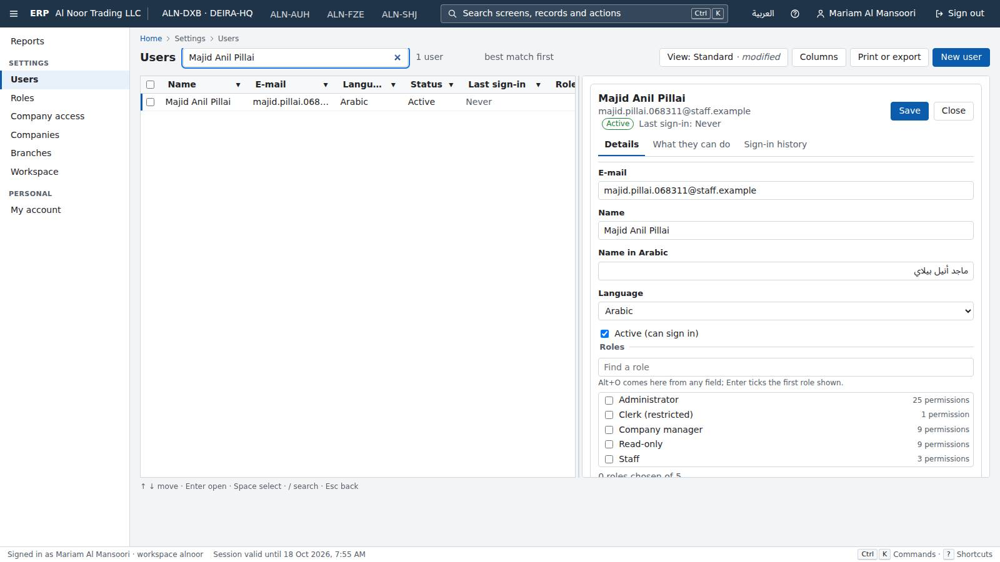

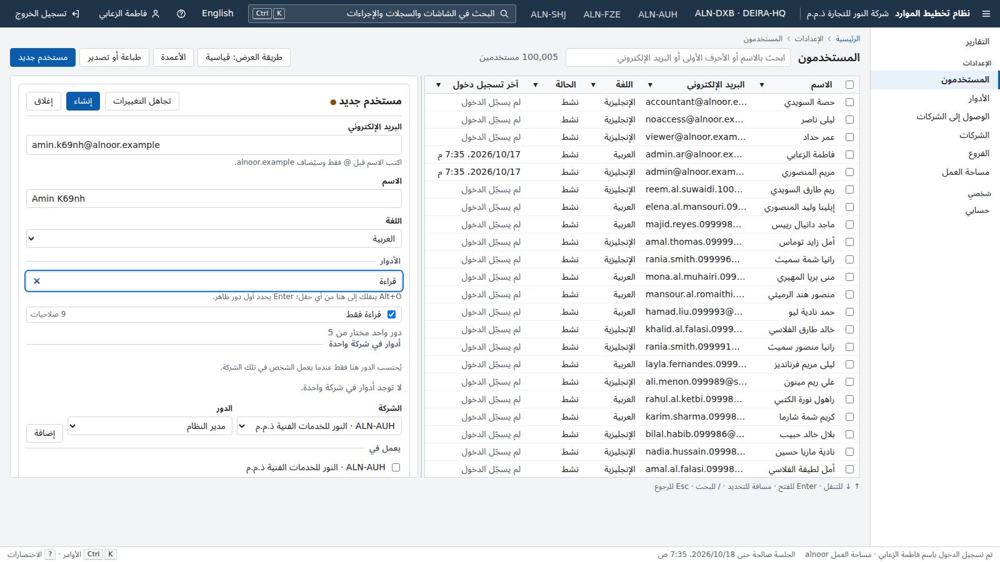

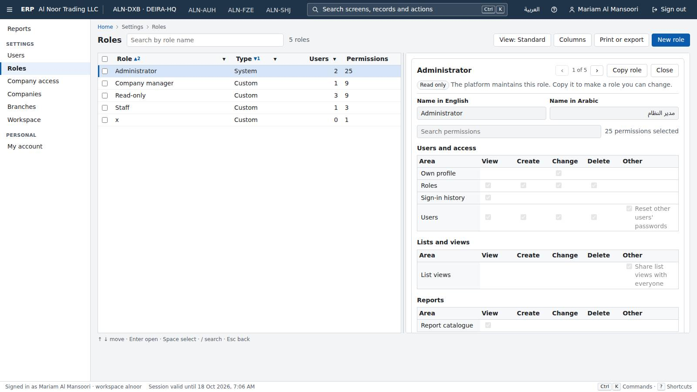

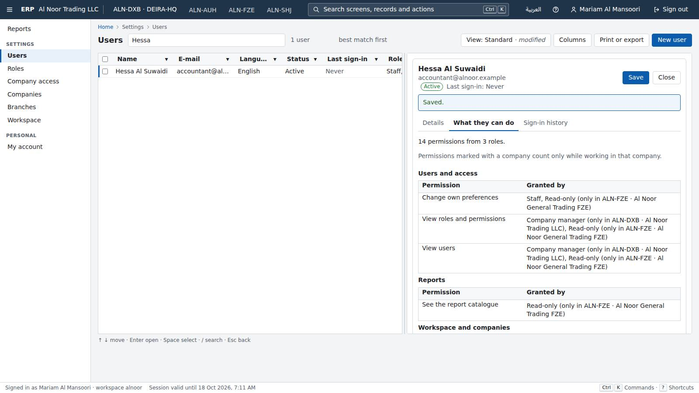

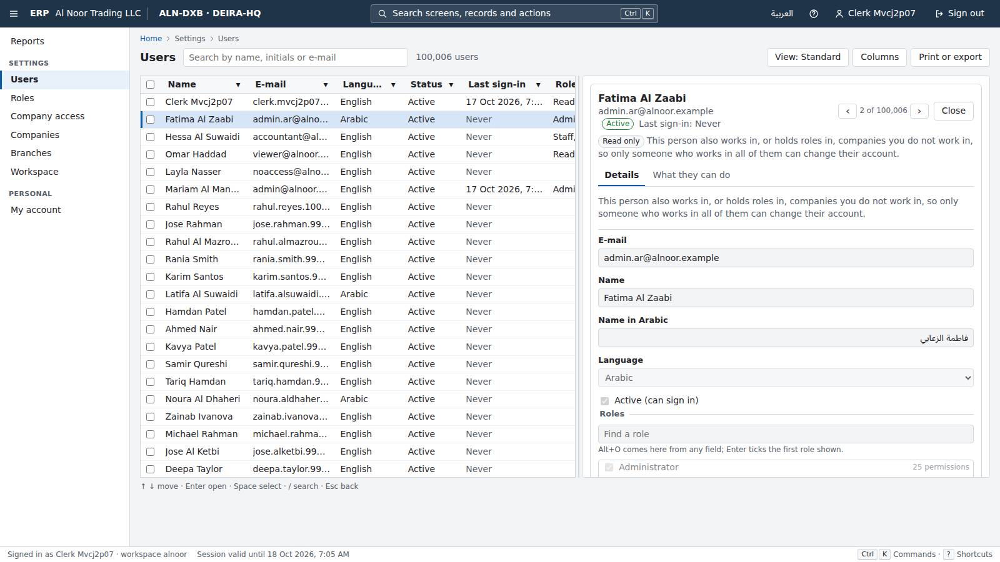

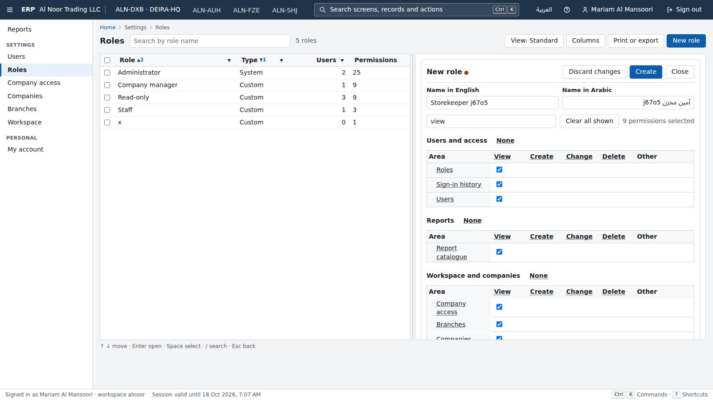

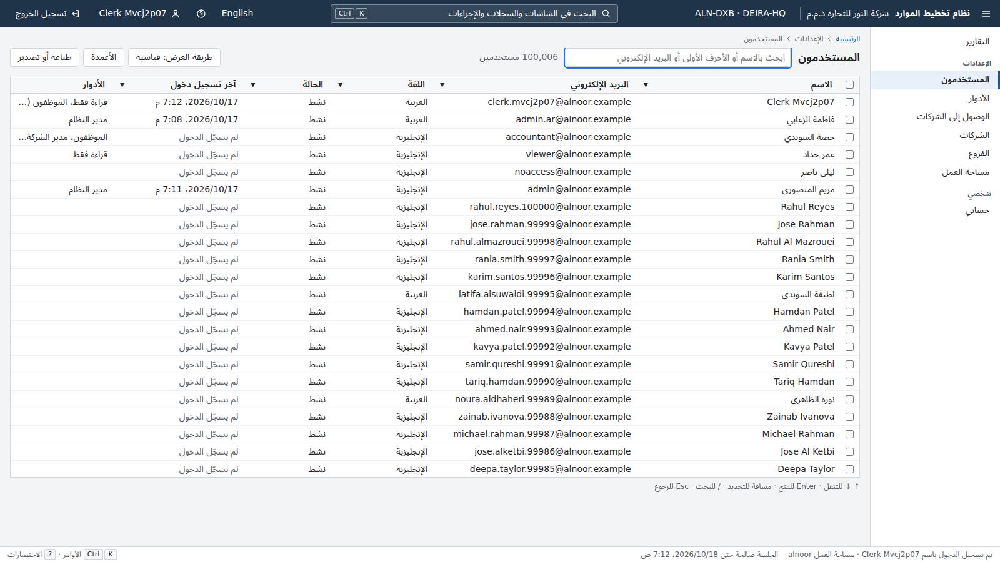

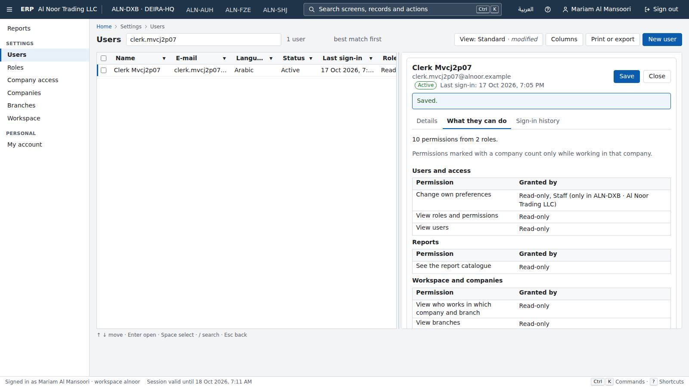
Round 11 · judged 2026-10-17T16:45:31Z · commit 65a646dfbd
English/Arabic app shell
Wave 1 · 9 rounds judgedEvery G1 check that exercises the shell's own write, PUT /api/identity/me/preferences, sends a full body with both language and numerals: ShellAnswers.PreferenceVariants covers the 4 combinations, and TenantActivity's first and last values fill every enumerated field. The product never sends that body on its main path. Alt+L, the top-bar button and My account send {language} only, and the digits switch sends {numerals} only. So any behaviour that differs when a field is left out is outside G1. I planted SL1: the endpoint remembers the digits last chosen by anyone, in any tenant, in a file, and answers a language-only switch with them. G1NonInterference, G1ShellAnswers (3 tests), G1HttpIsolation and G1ProcessState all passed. On the running planted build, tenant A's answer revealed tenant B's last digit choice. Real code produces exactly this pattern: 'fill unspecified fields from a shared default or cache', partial-update merges, and PATCH-style endpoints that every later module (invoices, stock, journals) will have. Under the round rules, a gate that misses a fault planted in this piece's surface fails the round. Fix: derive write variants from the request the product's own client sends, not only from full enumerations. For every body schema with optional or nullable fields, add each single-field variant and the empty-but-valid subsets to the turns that NonInterference, ShellAnswers and TenantActivity run. For the preferences endpoint, include {language} alone and {numerals} alone, in English and Arabic sessions. Add a self-test plant shaped like SL1 so the gate proves it catches it.
- G1 tenant isolation of the product (my own attacks) PASS — isolation-probe.txt (drivers/isolation_probe.py). Signed in as admin@alnoor.example, I sent 1,812 requests at Gulf Steel: every GET in the OpenAPI document with B's 30 ids and codes in the route, tenantId/tenant/q/search/companyId query values, X-Tenant-Id/X-Tenant headers; 780 writes (every documented PUT/POST/DELETE with B's ids in the route and body, plus a tenant header); and list exports (pdf/csv/xlsx) of 5 lists with tenant parameters. None of B's 33 markers appeared. No write on a B id succeeded, and B's own views of its tenant, companies, branches, roles, users and session were unchanged. The one 'changed' view was a 404 for a path that does not exist, whose traceId varies. Database (db-rls.txt): all 17 tenant tables have row-level security enabled and forced. As erp_app with no tenant context, users and audit return 0 rows. A cross-tenant UPDATE touched 0 rows, and a cross-tenant INSERT was refused by the policy. erp_app is neither superuser nor BYPASSRLS.
- G1 gate self-test on this piece's surface (plants) FAIL — plants/plants-summary.txt. SL1 (plant-server-S1-SL1-shared-digits-file.diff): PUT /api/identity/me/preferences, the shell's own switch endpoint, keeps the digits last chosen by anyone, in any tenant, in a temp file, and answers a language-only switch with them. It was MISSED by every G1 check that ran (plants-S1-gates.log, 10 tests): G1NonInterferenceTests (8 min), G1ShellAnswersTests (3 tests), G1HttpIsolationTests (21.5 min) and G1ProcessStateTests all passed. The leak is real at run time on the planted build (plants/plant-SL1-runtime-leak.txt). Right after Gulf Steel set ar/arab, Al Noor's language-only PUT was answered numerals 'arab', while Al Noor's stored numerals stayed 'latn'. When B set latn, A's answer followed to 'latn'. Caught in the same run: CL2 (new code this round: recordEvents writes the changed record into the device key erp.lastRecordChange). The web unit suite missed it (512 passed), but G1ClientStateTests.Every_use_of_a_carrier_that_outlives_the_document_is_reviewed failed on it. Also caught: CL1 (a pending preference applied to the next user on the device), with 2 web tests failing.
- G2 permissions (product and plants on this piece's surface) PASS — SP1 (plants/plant-server-S2-SP1-preferences-anonymous.diff): AllowAnonymous on PUT /me/preferences. CAUGHT: the host refuses to start ('PUT /api/identity/me/preferences => UpdatePreferences: declares no permission'), and 28 of 28 G2PermissionTests fail (plants-S2-gates.log). CP1 (plants/plant-client-CP1-switch-without-permission.diff): the language switch saves to the account without identity.profile.update. CAUGHT by AppShell.test.tsx, 1 test failed. Product, roles-ui.json: noaccess sees no screens and no palette 'new' actions, and its Alt+L switches on the device only (no PUT). viewer gets no 'New' actions. A deep link to /identity/users/new shows 'No access' for noaccess and the read-only list for viewer.
- G3 clean clone: one command builds, migrates, seeds and passes all tests; one command runs the demo FAIL — Fresh clone at 682a8ccd. Run 1 took slot 1 at 2026-10-18T08:46:27Z. Every test passed (.NET 656, web unit 512, e2e 110, compare 415, build 6, all at their ratchet minimums, 0 failed, 0 skipped). But './erp verify' exited 1 on the ratchet: 'verify.cpuSeconds: the verify stages used 10659 processor seconds, maximum 10500'. The load peaked at 79.1. Re-run (run 2) took slot 2 at 2026-10-18T10:56:16Z: again every test passed, and again it exited 1 on 10,727 s against 10,500 (load peaked at 77.7). I could not get a quiet run. Both logs and the kept reports are in verify-critic-p04-shell-r11-run{1,2}.log and verify-run{1,2}-reports. './erp up' served the seeded demo (100,006 users) in 81 s (up.log). The maximum was not raised.
- Rule gates (licences, decimal money, EN/AR string twins, accessibility, audit) PASS — These ran inside the verify and passed: 'String check passed: 79 source files, 785 keys in English and Arabic, 78 plural messages' and 'Accessibility check passed: 1120 JSX elements', plus the .NET rule tests. axe-core WCAG 2 A/AA found 0 violations on sign-in, home, users, a user record, the palette and the help sheet, in English and in Arabic (axe.json). Database (db-audit-preferences.txt): every language or digits switch and every record save wrote an audit.entries row with actor, time, record and old/new values.
1699 / 1699 passed
0 failed · 0 skipped · 4100s
Clean clone → demo: FAIL in 4100s
| Task | Ours | Odoo | Winner |
|---|---|---|---|
| switch-to-arabic | 1 · 0 · 0.177s · 2.65s | 6 · 1 · 3.571s · 15.28s | ours |
| reach-screen-keyboard | 2 · 2 · 0.183s · 3.66s | 3 · 8 · 1.039s · 3.99s | ours |
| open-third-user-keyboard (critic-added r2, kept) | 6 · 6 · 0.361s · 6.13s | 8 · 13 · 1.636s · 6.74s | ours |
| new-user-keyboard (critic-added r7, kept) | 3 · 4 · 0.232s · 5.57s | 4 · 10 · 1.81s · 5.9s | ours |
| keyboard-navigation (open the third contact by keyboard) | – | 9 · 10 · 1.733s · 7.25s | not-compared |


Round 11 · judged 2026-10-18T12:06:44Z · commit 682a8ccd6f
List and search framework
Wave 1 · 6 rounds judgedp05 promises that G1 attacks every list registered with the framework, and every later 100,000-row list relies on that. After round 9, ListVolume judges each list at demo volume. Its searches are one-letter words only: 14 letters, plus sorted and grouped versions of them. The engine runs different code for other search shapes. One word of 2 to 5 Latin letters takes the initials path (InitialsWord and InitialsMatch: an extra regular-expression condition and an initials score). A broad answer (over MaxRankedRows) also has its own branch. Neither runs at volume in any gate, and the small-volume gates never get a broad answer. The structural checks only look at process memory (ProcessState), and the process-global rule in TenantSource does not cover the file system. So a total remembered in the temp folder, keyed without the tenant, is invisible to every check. That is a natural optimisation of the slowest answer while someone types ('ma' reads the regular expression on about 30,000 rows). Plant L13 does exactly that. Fixes: (a) Build the volume query set from the engine's branches, not from letters. Include one word of each length from 2 to MaxInitials that is broad (over MaxRankedRows) in both tenants with different counts, and one that is ranked. Add multi-word searches (broad and ranked), Arabic words of 2 or more letters, and digit searches. Send each as B, A, B, A. Report 'blind' for any branch with no discriminating query, as is already done for Unranked and Ranked. (b) Give TenantSource a reviewed rule for file-system and other external state in product code: System.IO File, Directory and FileStream writes, Path.GetTempPath, MemoryMappedFile, named Mutex or Semaphore. (c) Add the L13 shape to the ListVolume self-test, next to the existing 'total memo for big filtered queries'.
- G1 tenant isolation (gate on this piece's surface) FAIL — Plant L13 (L13-broad-initials-total-memo-on-disk.patch, in kernel ListBinding.QueryAsync) keeps the total of a broad initials search on disk for one minute. It applies to one word of 2 to 5 Latin letters, no filter, total over 10,000, and the file in the temp folder is keyed by list key and word, with no tenant. With only L13 planted, all 68 G1 tests pass (run-L13-only-g1-all.log, EXIT 0): ListVolume 'Every_list_answers_each_tenant_from_its_own_rows_at_demo_volume', its self-test, NonInterference, ProcessState, TenantSource and HttpIsolation all pass. Live on a planted stack, gulfsteel (1,005 users) asks 'ma' after alnoor and is told 30,568, alnoor's count. Its own walk returns 314 rows. The same happens for 'sa' (14,778 vs 164) and 'ra' (20,054 vs 168) (plant-live-L13.txt). The Users screen shows '30,568 users' (plant-L13-second-tenant-sees-first-tenants-search-count.jpg).
- G1 tenant isolation (live attack on the unplanted product) PASS — Signed in as alnoor's admin on the clean-clone demo, I used gulfsteel's personal and shared view ids on GET, PUT and DELETE of both views/{id} and shared-views/{id}: every request got 404, and B's views were unchanged with the same versions. A's views listing did not contain B's canary. I searched 'gulfsteel' and filtered on e-mail contains/eq gulfsteel: total 0 each time. I sent B's keyset cursor in A's query: A got only alnoor rows. A's groups add up to A's total of 100,005. A CSV export filtered on 'gulf' had no gulfsteel rows. Anonymous calls with tenant headers got 401 (attack-api-lists.txt). In the database, lists.saved_views has RLS enabled and forced. erp_app is not a superuser and has no bypassrls. erp_app cannot read pg_class.reltuples (db-inspect.txt).
- G2 permissions FAIL — Server side holds. Plant P11b adds POST /api/lists/{key}/views/{id}/share, which makes a shared copy of the caller's own view and declares only the list's read permission. It is caught by G2 'No_endpoint_that_changes_data_is_guarded_by_a_read_permission' (run-P11b-g2-all.log, 47/48). The screen side is missed. Plant P10 (P10-reader-offered-shared-view-change.patch) drops canShare from ListView's canChange. All 504 web unit tests still pass, including the screen permission sweeps (run-P10-web-unit.log). Live, viewer@alnoor picks the workspace's shared view and is offered 'Delete this view' (plant-P10-reader-offered-delete-of-shared-view.jpg). The e2e test for that reader (tests/e2e/specs/lists.spec.ts, 'a read-only user keeps personal views but is not offered sharing') only checks the share checkbox in the save dialog. I did not run the e2e suite on the planted build.
- G3 clean clone (one command: build, migrate, seed, all tests) FAIL — Every test passed in both runs: .NET 656, web 504, e2e 106, compare 415, build 6, so 1,687 passed, 0 failed and 0 skipped. But ./erp verify exited 1 both times, on the ratchet's verify.cpuSeconds maximum of 10,500. Run 1 used 10,996 s of processor time and 5,293 s of wall time. My G1 plant run was beside it, and the load peaked at 74 (verify-critic-p05-list-search-r12-run1.log). Run 2 used 11,212 s of processor time and 4,530 s of wall time from 'slot taken' at 06:24:12Z. Nothing else of mine was running, but other agents kept the load up to 79 (verify-critic-p05-list-search-r12-run2.log). No maximum was touched. The demo command passed: ./erp up gave the seeded 100,005-user demo in 67 s (up-critic-p05-list-search-r12.log), and with ERP_SEED_USERS_CSV it also took 67 s. The port and project overrides worked.
- Rule gates (licences, money, strings EN/AR, audit, list contract and indexes) PASS — These run inside the .NET stage of both verifies, and that stage passed (656 tests). lists.saved_views is not in audit-exempt.txt and carries created_by and updated_by.
1687 / 1687 passed
0 failed · 0 skipped · 5297s
Clean clone → demo: FAIL in 5297s
| Task | Ours | Odoo | Winner |
|---|---|---|---|
| find-user (find one user among 100,000; p16 Contacts is not built, so the dataset's 100,000 users) | 3 · 3 · 0.697s · 8.29s | 6 · 5 · 1.841s · 10.35s | ours |
| open-third-user-keyboard (open a record from the list by keyboard only) | 6 · 6 · 0.548s · 6.13s | 8 · 13 · 1.384s · 6.74s | ours |
| find-record (find one contact among 100,000) | – | – | not-compared |


Round 12 · judged 2026-10-18T07:40:19Z · commit ebb4897215
Form and report framework
Wave 2 · 7 rounds judgedThe new phone field and the completed-entry save remove the save key and a step, so ours now wins steps, machine seconds and modelled seconds. Keystrokes still tie. Ours' credited path types +971505550199 (14 keys); the instrument requires +971 to be typed. Odoo's real expert path types the same 14 keys: triple-click the phone field, type +971505550199, click Save. Odoo shows '+971 50 555 0199' on the form, stores '+971505550199', and the instrument credits that entry ('separators free'). The harness misses this for two reasons. The Odoo driver types the spaced number and its verify() demands the exact spaced string, which is stricter than the instrument's own rule. And the instrument still cannot express a triple-click. A tie is a loss, and editing a field is the most frequent action every later module will build on this form. The digits themselves cannot be cut, so ours needs a credited path that is strictly shorter in keys. The clearest one: ours already supplies +971, so the person types only the 9-digit national number (505550199, 9 keys), and ours stores the full international number. Odoo's 9-digit entry stores just '505550199', without the country code, so Odoo cannot be credited for it, and Odoo stays at 14. For that path to count, the measuring instrument must accept a fixed prefix that a field shows as its own, before the clock, as not needing to be typed. That decision belongs to p01 and the lead; ours' driver comment already describes the 9-digit path. A product alternative is any entry ours can do in fewer keys than 14 that the instrument credits.
- G1 tenant isolation (product as built) PASS — Every G1 test passed inside verify. Tenant_A_cannot_reach_tenant_B_through_any_endpoint ran 37 m 51 s, and the HTTP-attack self-test passed. I attacked the live demo myself (tools/attack.mjs, browser/attack-print-surface.txt). Signed in as Gulf Steel, I sent 1,136 requests to Al Noor's data through every report and printable list: json/csv/xlsx/pdf × en/ar, with Al Noor's company and role ids as parameters, tenant/tenantId query fields, and X-Tenant-Id, X-Company-Id and X-Branch-Id headers. I also sent GET and PUT to Al Noor's company records. PDF streams were inflated before searching. 0 leaks and 0 victim rows changed; a cross-tenant PUT answers 404, the same as a random id (browser/attack-put.txt). Database (browser/db-rls.txt): erp_owner, erp_app and erp_auth have no superuser and no BYPASSRLS. All 17 tables with tenant_id have RLS enabled and forced. The tables without tenant_id are the migration histories, identity.sign_in_secret and the new identity.sign_in_failures (hashed 32-byte key plus time; no grant to erp_app).
- G1 catches a leak planted in p06's surface PASS — Plant L9 (plants/plant-L9-xlsx-cache-without-tenant.diff) is a 30-second XLSX workbook cache in ReportEndpoints.Output. Its key is report, language, grouping, parameter texts and columns, with no tenant and no issuer. It was caught: G1HttpIsolationTests failed with 536 leaks, e.g. 'tenant A administrator (cookie) → GET /api/reports/lists/tenancy.access?format=xlsx&language=ar… [an answer shape tenant B asked for first] → 200: response contains tenant B marker CNRYECD3BA8253' (plants/run-L9.log, 28 min).
- G2 permissions (product as built) PASS — All G2 tests passed inside verify (G2ReportData 2 m 57 s). Live checks (browser/explore-viewer.log): the viewer's company form has 21/21 fields disabled and no Save button. Typing 505550199, Enter, Ctrl+S and Alt+Z sent 0 writes, and the viewer's direct PUT got 403. noaccess@ gets 403 on the catalog, report run, list print and company read.
- G2 catches permission faults planted in p06's surface PASS — Plant P14 (plants/plant-P14-report-run-needs-only-catalog-read.diff) makes every /api/reports/run/* route require only reports.catalog.read. It was caught twice in plants/run-P14.log: G2PermissionTests says 'GET /api/reports/run/identity.roleSummary declares reports.catalog.read; a report route must declare identity.roles.read', and G2ReportDataTests also fails. Plant W4 (plants/plant-W4-phone-field-ignores-read-only.diff) is this round's new PhoneField ignoring a read-only form. It was caught by vitest, 1 failed / 488 passed: 'the phone field and a completed entry > a user who may only read the record cannot save it by completing a number' (plants/run-W4-vitest.log).
- G3 clean clone PASS — Fresh clone at 08159a4f, project c-p06-form-report-r7, ports 20650/20651 and verify ports 20660/20661 set through ERP_PROJECT, ERP_HTTP_PORT, ERP_DB_PORT, ERP_VERIFY_HTTP_PORT and ERP_VERIFY_DB_PORT. `./erp verify` through verify-slot.sh took the slot at 13:36:15Z and passed in 3,897 s. Processor time was 9,800 s of the 10,500 s maximum. Wall time is not judged because the machine was busy (load up to 67, with integ-verify and my plant runs alongside). The ratchet passed. `ERP_SEED_USERS_CSV=gauntlet/compare/data/out/users.csv ./erp up` brought up the seeded demo in 69 s (up.log).
- Rule gates (licence, money, strings, audit) PASS — They pass inside verify: the NuGet, npm and font licence gates and the string, money and audit rules. Form saves, including completed-entry auto-saves and their Undo, leave audit rows with the actor and old/new phone (browser/db-audit-phone.txt).
1619 / 1619 passed
0 failed · 0 skipped · 3897s
Clean clone → demo: PASS in 3897s
| Task | Ours | Odoo | Winner |
|---|---|---|---|
| edit-and-save | 2 · 14 · 0.227s · 6.97s | 3 · 14 · 0.438s · 8.9s | odoo |
| print-list-arabic | 3 · 13 · 0.63s · 11.09s | 5 · 32 · 7.085s · 19.06s | ours |
| arabic-report | 2 · 0 · 0.135s · 5.3s | 6 · 0 · 4.87s · 15.9s | ours |

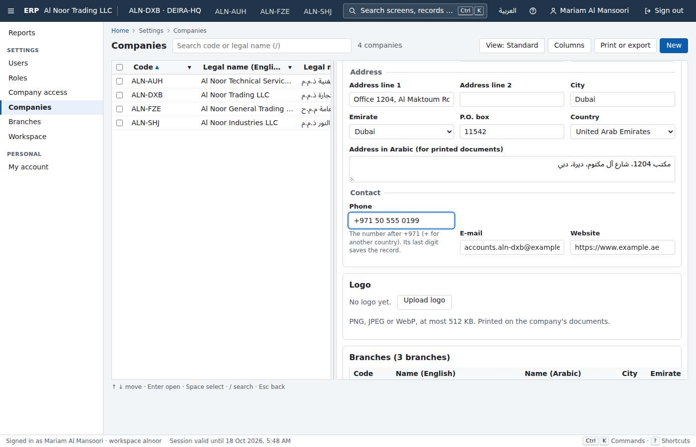

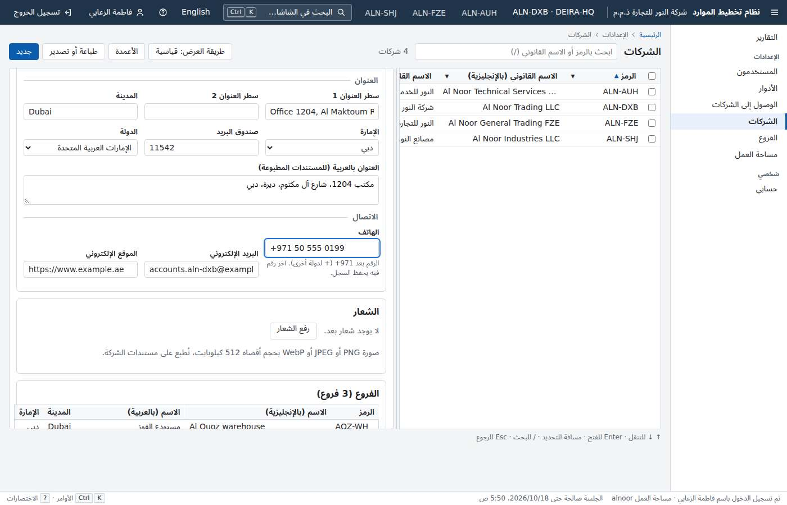

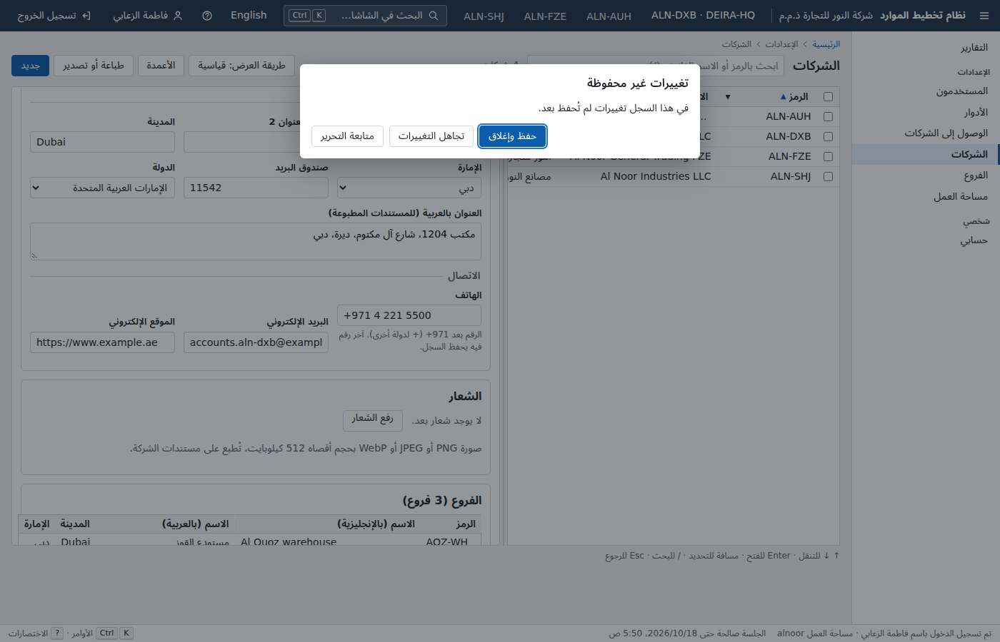

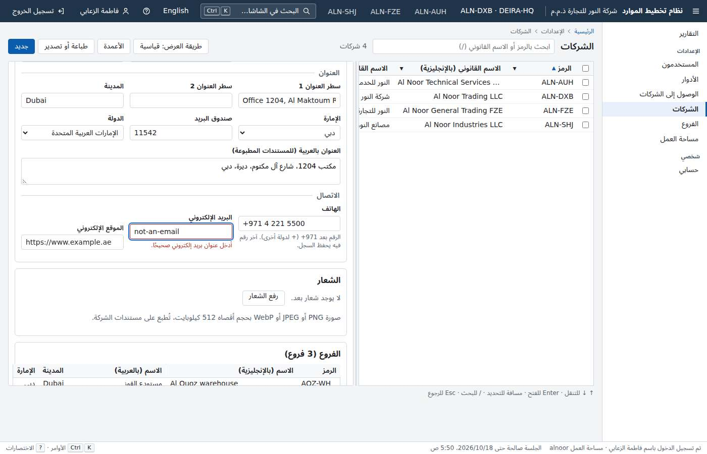

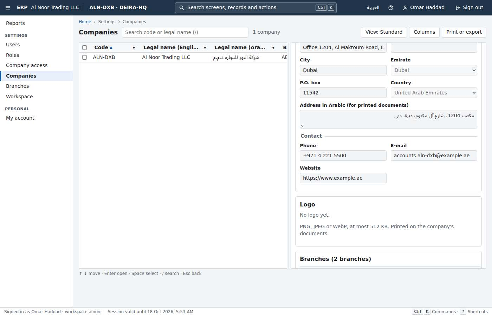

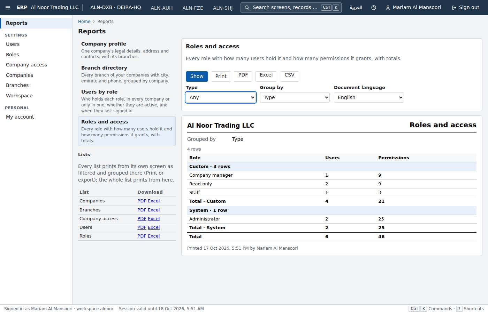

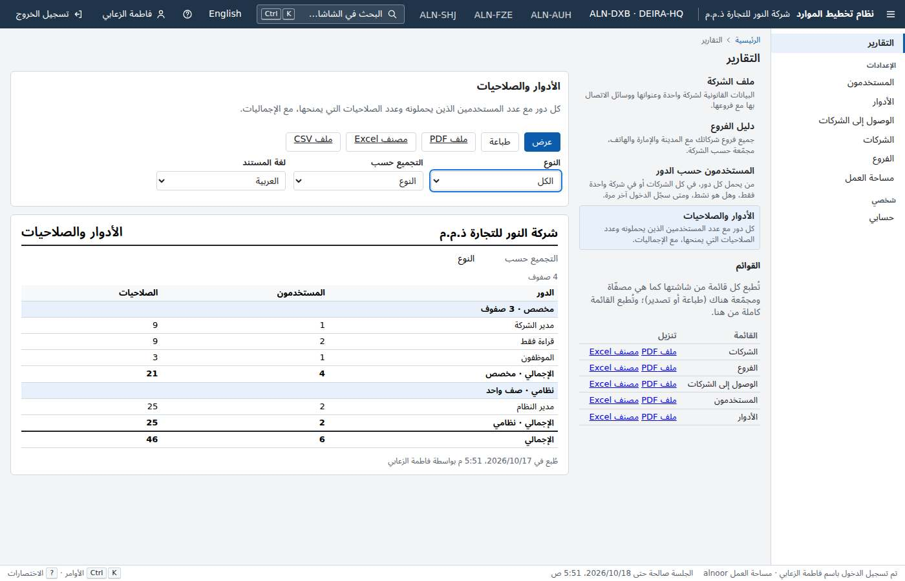

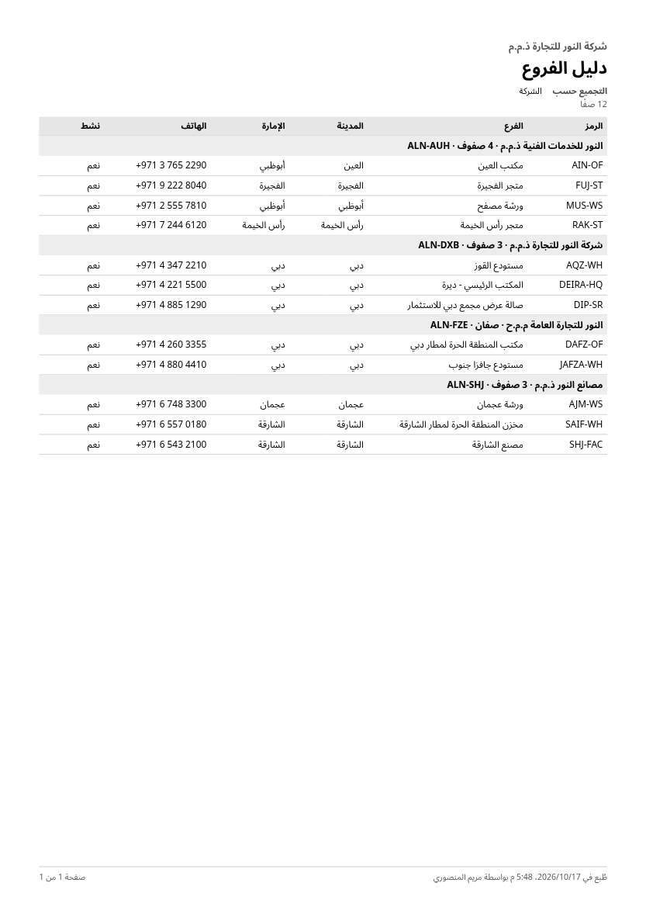
Round 7 · judged 2026-10-17T14:41:34Z · commit 08159a4f
Audit trail
Wave 2 · 0 rounds judgedWaiting for its first critic.
Multi-currency
Wave 2 · 0 rounds judgedWaiting for its first critic.
Tenant-defined custom fields
Wave 2 · 0 rounds judgedWaiting for its first critic.
Document numbering
Wave 2 · 0 rounds judgedWaiting for its first critic.
Attachments
Wave 2 · 0 rounds judgedWaiting for its first critic.
Background jobs
Wave 2 · 0 rounds judgedWaiting for its first critic.
Approval flows
Wave 3 · 0 rounds judgedWaiting for its first critic.
Import and export
Wave 3 · 0 rounds judgedWaiting for its first critic.
Documented API for everything
Wave 3 · 0 rounds judgedWaiting for its first critic.
Shared Contacts directory
Wave 2 · 0 rounds judgedWaiting for its first critic.